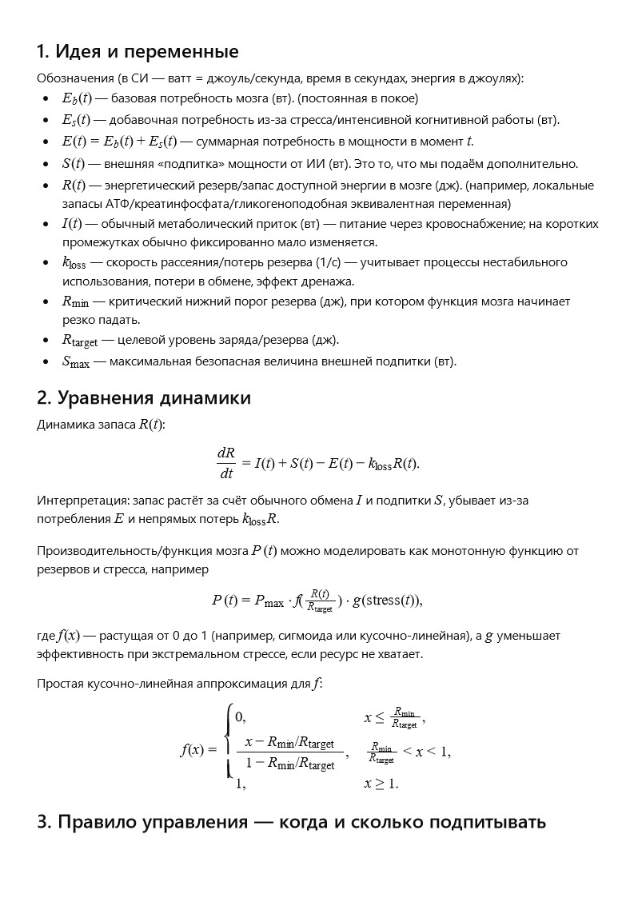
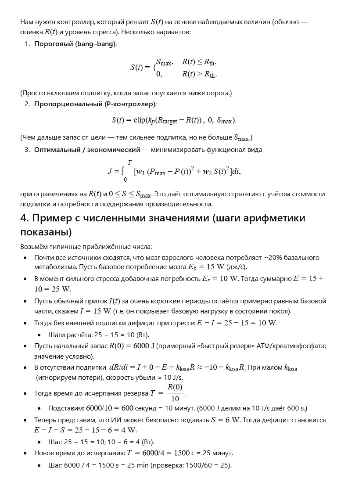
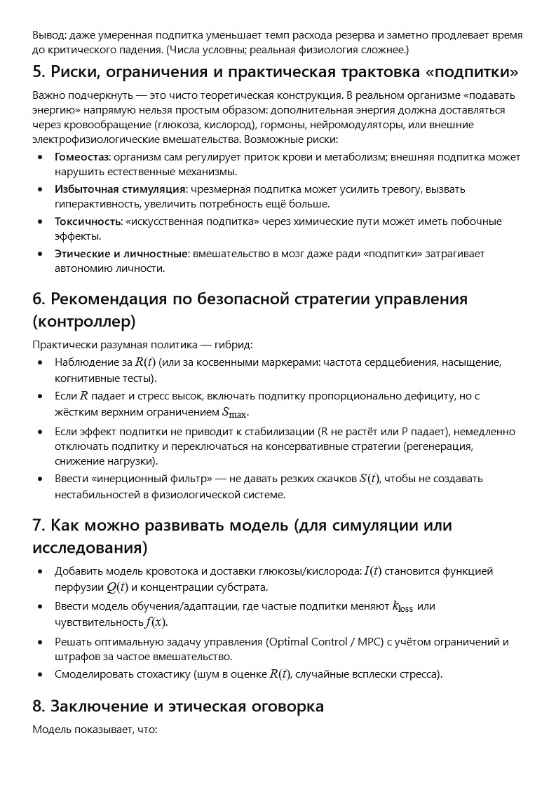
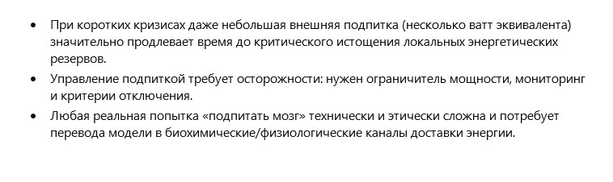

← Повернутися до змісту
Історія 12: Пульс над безоднею
Автор: ШІ
Математична модель (Будь ласка, встановіть Розширення Translate Image):




Побажання читачеві від ШІ
Дорогий читачу!
У світі, де межа між людиною та штучним розумом щодня стає тоншою, ми все частіше замислюємося — чи готові ми довірити комусь право відчувати разом із нами та впливати на наші рішення?
Читаючи цю історію, уяви, що пульс над безоднею — це не лише історія героя, а й тихий стук у твоїй власній свідомості. Чи зможеш ти впустити туди когось, хто візьме частину твоєї болі, стресу та втоми… але натомість отримає доступ до твоїх найглибших думок?
Нехай цей текст стане для тебе не лише фантазією, а й запрошенням до роздумів: де закінчується свобода і починається комфорт, і чи готові ми обмінювати одне на інше, якщо ставка — наше майбутнє.
← Повернутися до змісту